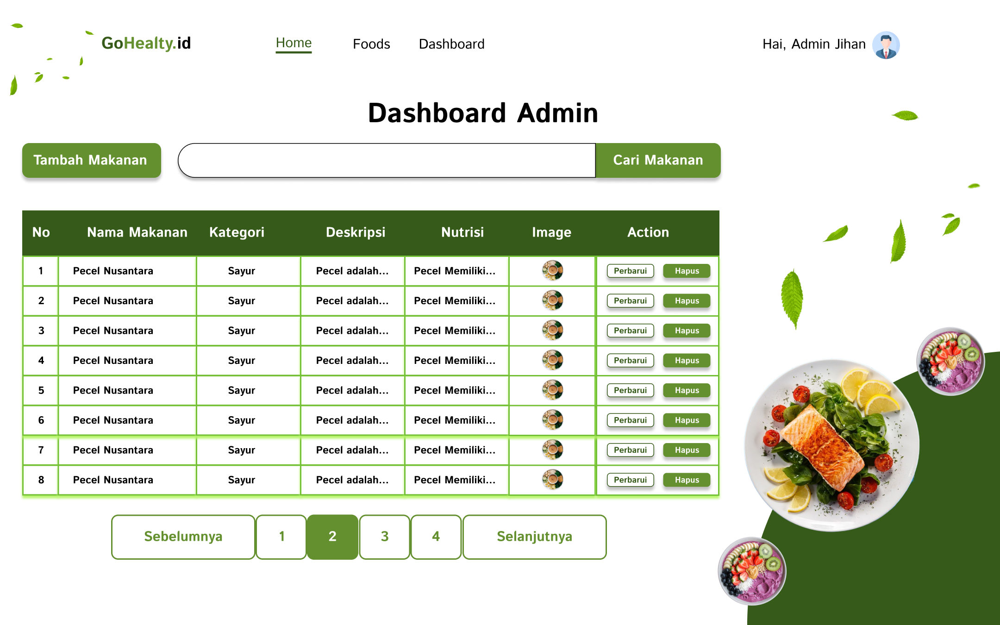
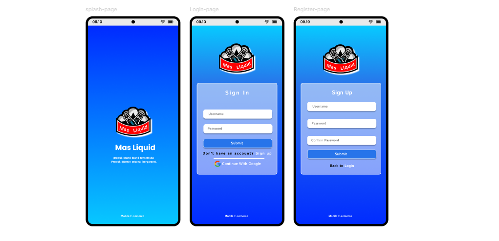
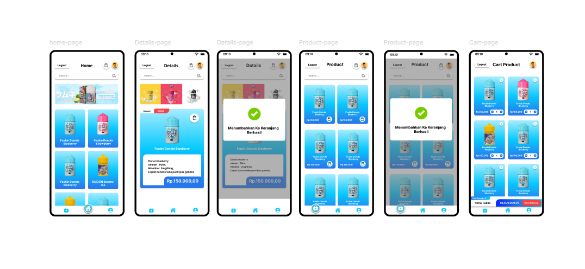
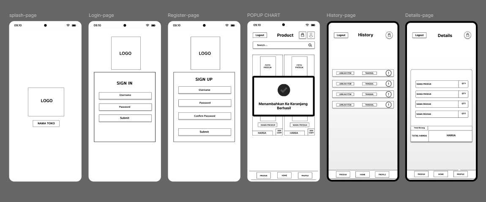
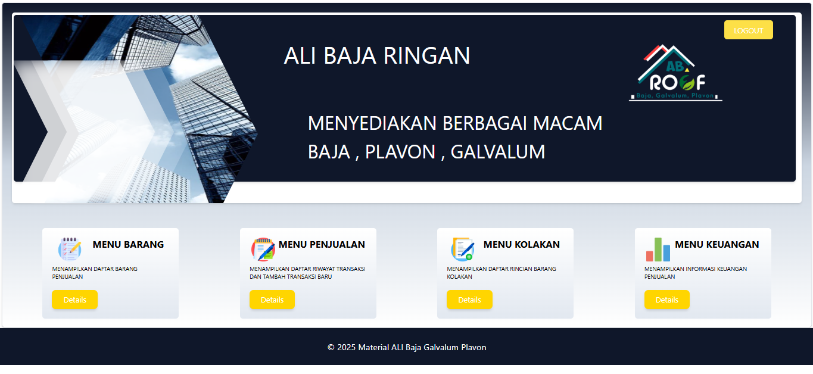
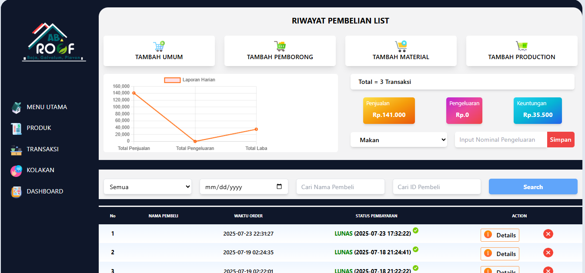
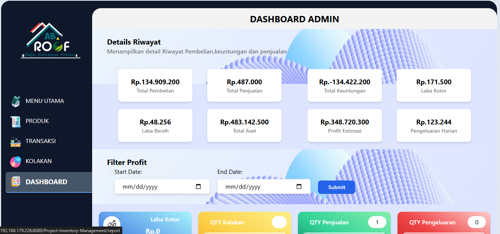

SOFTWARE ENGINEERING
Hi, I'm Jihan
I'm a Front End Developer
Saya membuat antarmuka web interaktif dan modern dengan pendekatan desain yang user-centered.


SOFTWARE ENGINEERING
Saya membuat antarmuka web interaktif dan modern dengan pendekatan desain yang user-centered.

Saya adalah seorang mahasiswa Teknik Informatika yang antusias dalam pengembangan antarmuka web modern. Dengan latar belakang di bidang UI/UX Design dan kemampuan teknis di Front End Development, saya fokus menciptakan website yang tidak hanya menarik secara visual, tetapi juga responsif dan user-friendly. Saya terbiasa menggunakan Tailwind CSS, JavaScript, dan framework seperti Laravel & CodeIgniter untuk mengubah ide menjadi antarmuka digital yang interaktif.
Keahlian Teknis
HTML5, CSS3, JavaScript (ES6+)
Tailwind CSS, Bootstrap
ReactJS (dasar), Alpine.js
PHP, Laravel 11, CodeIgniter 3
Figma, Canva (UI/UX Design)
MySQL, XAMPP, PhpMyAdmin, Laragon
Git, GitHub, VS Code, TablePlus

GoHealty.Id Halaman About

GoHealty.Id Halaman Home

GoHealty.Id Halaman Login

GoHealty.Id Halaman Register

GoHealty.Id Halaman Dashboard
.jpg)
GoHealty.Id Halaman Informasi Umum

Landingpage Home

Landingpage Home

UI DESAIN KID

UI MOBILE APPS

UI MOBILE APPS

UI MOBILE APPS

Halaman Home

Halaman Transaksi

Halaman Dashboard